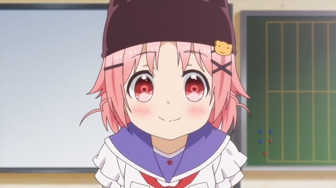
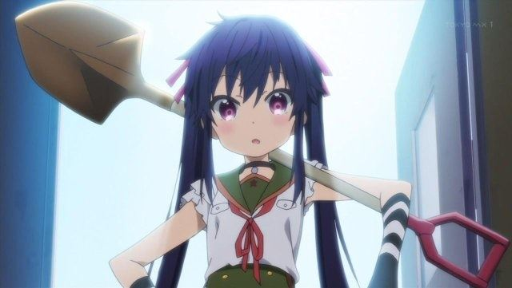
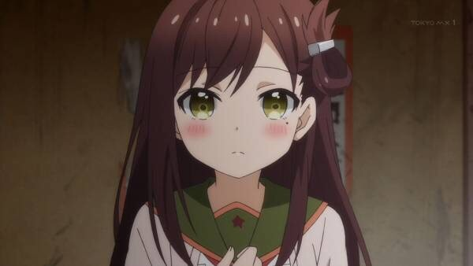
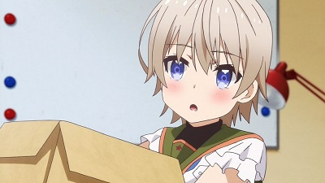
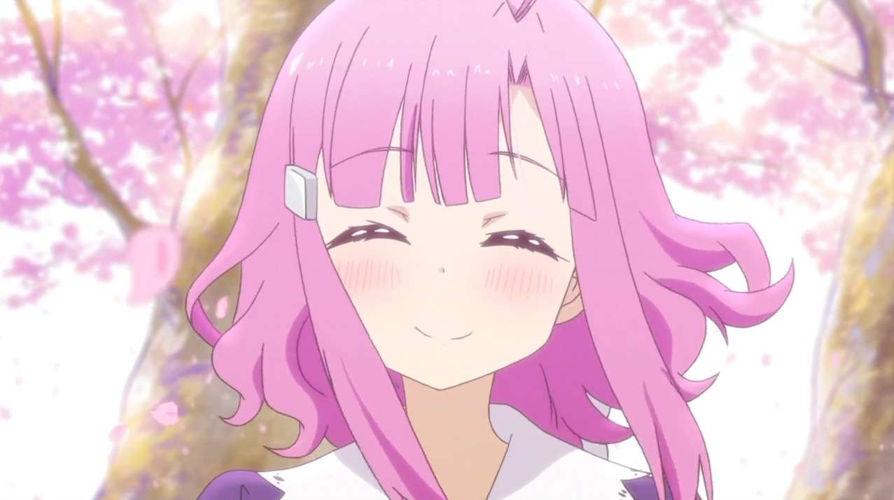
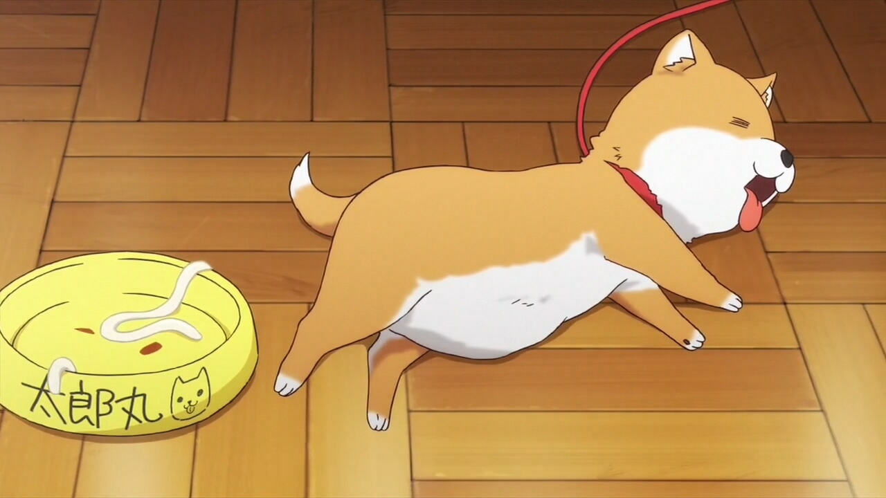

劇情大綱
主角丈槍由紀乍看之下是名活潑可愛的高中生，就讀於巡之丘學園。
|
主要角色
丈槍由紀 | |
|  | 巡之丘學園高中3年級生，個性天真活潑，是學園的氣氛製造者，胡桃、悠里和美紀也是因此而不致於崩潰。
|
惠飛須澤胡桃 | |
|  | 巡之丘學園高中3年級生，由紀的好友，活力充沛的少女，每時每刻都帶著鐵鏟。
原本是田徑社成員，因此擁有不錯的運動能力和腳力。
|
若狹悠里 | |
|  | 巡之丘學園高中3年級生，擅長料理與清掃的家庭系少女，左撇子。
|
直樹美紀 | |
|  | 巡之丘學園高中2年級生，原本和朋友圭一起在購物商場避難，後來因為圭獨自離開避難所而一人繼續生活。
|
佐倉慈 | |
|  | 巡之丘學園高中的現代國語教師，暱稱慈姊。學園生活社的顧問，心地善良，是個會為學生著想的老師。
|
太郎丸 | |
|  | 學園生活社飼養的柴犬，在漫畫中被由紀撿到時已經被咬到，殭屍化後被慈帶到很遠的地方丟掉，但又跑了回來。在動畫中則是因擅自跑入地下室而疑似被殭屍化的慈姐感染。 因為太郎丸，使得主角一行人知道殭屍能感染哺乳類，以及殭屍的歸巢本能。 |
影片介紹
以上內容只是作業